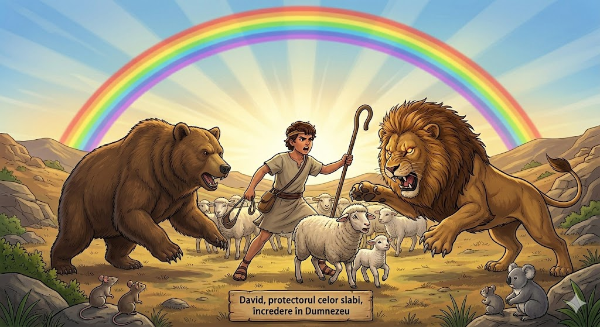
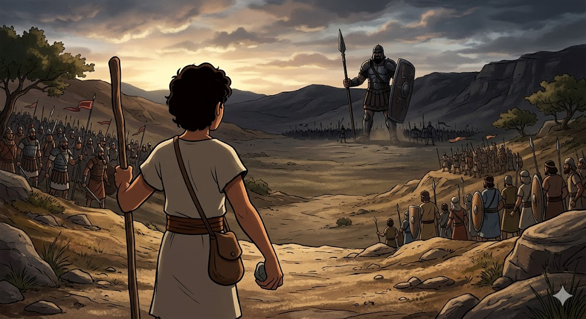
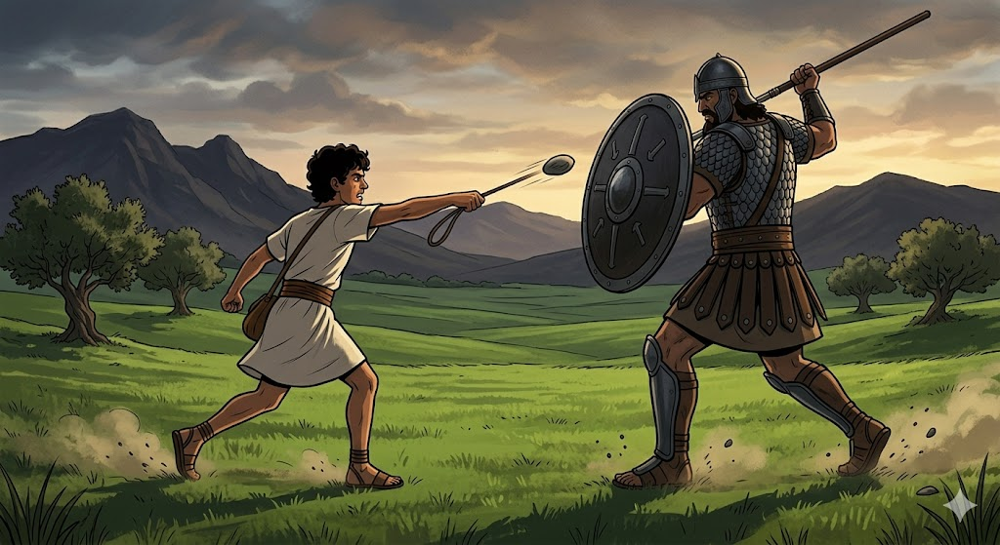

David era cel mai mic dintre frații săi, un simplu băiat care păzea oile. În timp ce alții vedeau în el doar un copil, Dumnezeu vedea un viitor rege cu o inimă plină de încredere.
1. Pregătirea în Pustiul Oilor
Înainte de a înfrunta uriași, David a învățat să aibă încredere în Dumnezeu păzind oile. Când leii sau urșii veneau să fure mielușeii, David nu fugea. El știa că Dumnezeu îi dă putere să fie protectorul celor slabi.

2. Uriașul care îi speria pe toți
Goliat era un soldat uriaș, cu o armură grea și o voce tunătoare care îi făcea pe toți ostașii să tremure de frică. Dar David a înțeles ceva ce ceilalți uitaseră: nicio sabie și niciun scut nu sunt mai puternice decât ajutorul lui Dumnezeu.

3. O piatră și o Credință Mare
Fără armură și fără sabie, David a alergat spre uriaș doar cu o praștie și cinci pietre netede. El nu s-a bazat pe forța brațelor sale, ci pe Numele Domnului. Cu o singură lovitură, uriașul a fost învins, iar poporul a fost salvat.

„Tu vii împotriva mea cu sabie, cu suliţă şi cu pavăză; iar eu vin împotriva ta în Numele Domnului oştirilor!”
- 1 Samuel 17:45
🌟 Concluzia Noastră
David ne învață că Dumnezeu este mai puternic decât orice uriaș din lume. Când îți pui încrederea în El, frica dispare și poți face lucruri incredibile, indiferent cât de mic ești!
🛡️ Știai că?
Goliat avea o înălțime de aproape 3 metri! Armura lui cântărea cât un adult întreg, iar vârful suliței sale era la fel de greu ca o minge de bowling din fier. Totuși, toată această greutate nu a putut sta în fața unei singure pietre ghidate de Dumnezeu.